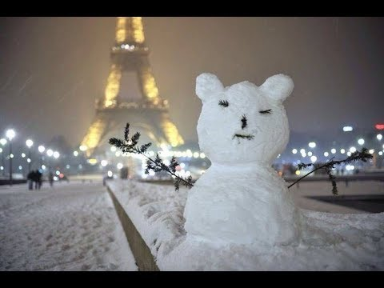
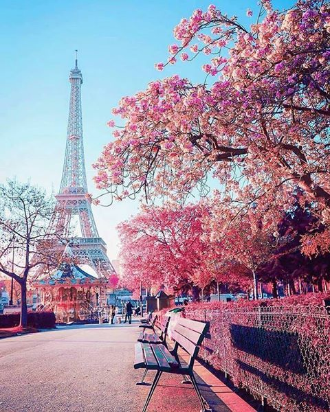
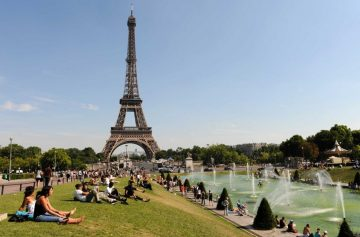
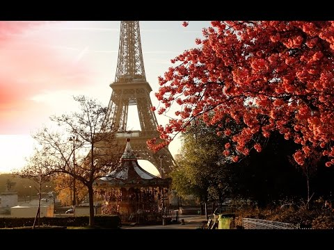

Hablaremos del tiempo en Paris en cada temporada.
Primero se puede observar una tabla con parámetros climáticos en Paris.
| Mes | Enero | Febrero | Marzo | Abril | Mayo | Junio | Julio | Agosto | Septiembre | Octubre | Noviembre | Diciembre | París es bonito simpre |
|---|---|---|---|---|---|---|---|---|---|---|---|---|
| Temp.media (Cº) | 4.7 | 5.5 | 8.4 | 10.8 | 14.8 | 17.6 | 20.0 | 20.0 | 16.7 | 12.6 | 7.9 | 5.7 |
| Precipitaciones(mm) | 53.7 | 48.0 | 48.5 | 54.8 | 65.0 | 56.5 | 63.2 | 43 | 56.6 | 59.7 | 53.7 | 58.7 |
| Horas del sol | 59.4 | 93.9 | 127.8 | 171.1 | 197.6 | 207.2 | 227.4 | 230.7 | 180.1 | 125.5 | 82.5 | 50.6 |
Estaciones del año
El invierno en Paris Los inviernos resultan suaves duros en París, aunque son sobrellevables ya que no se registran de forma frecuente medidas muy extremas. La media de temperaturas máximas durante la época invernal es de 7 º, mientras que las mínimas apenas superan 1 º de media.
Enero es el mes más duro del periodo invernal y al que corresponden las nevadas más intensas. Como media, durante este mes apenas se alcanzan los 6 º de temperatura máxima, por tan solo 1 º de mínima.
Durante la primavera existe una diferencia bastante notable entre los comienzos de la estación y los prolegómenos del verano. Así, durante el mes de marzo se registran temperaturas máximas que solo suponen una media de 12 º (registrándose todavía mínimas de solamente 4 º)
Sin embargo, en el mes de mayo las temperaturas ya muestran un ascenso muy claro y la media de cifras máximas asciende a los 20 º.
En la foto se pueden ver árboles floreciendo al lado de la Torre Eiffel
Durante el verano la temperatura no es de forma habitual demasiado elevada, presentando una media de 25 º de máxima, aun cuando en algunas ocasiones supere los 30 º y pueda llegar a unos 35 º que se agravan con la intensa humedad.
Julio es el mes más caluroso, presenta las temperaturas máximas medias más elevadas, con 25 º, mientras que en junio se registran las medias más bajas, con 13 º.
Esta estación se caracteriza por cierta calidez diurna y noches frescas y ventosas. Septiembre resulta todavía un mes cálido, con temperaturas máximas medias de 21 º (con una media mínima de 12 º).
En algunos días de octubre, el frío ya va asomando su rostro característico, hasta llegar en noviembre a una media de 10 º como temperatura máxima y de tan solo 5º como mínima.
